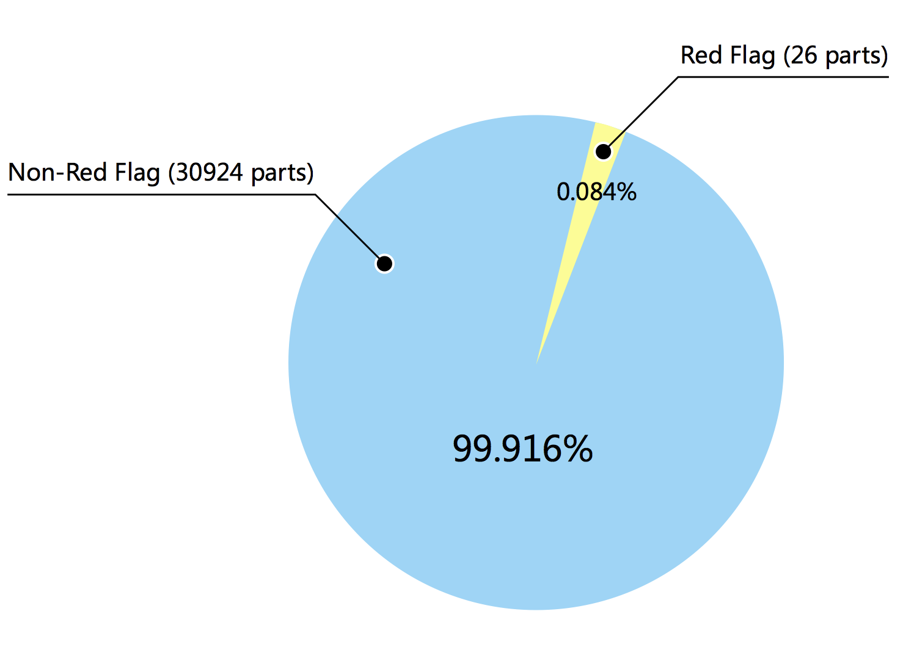
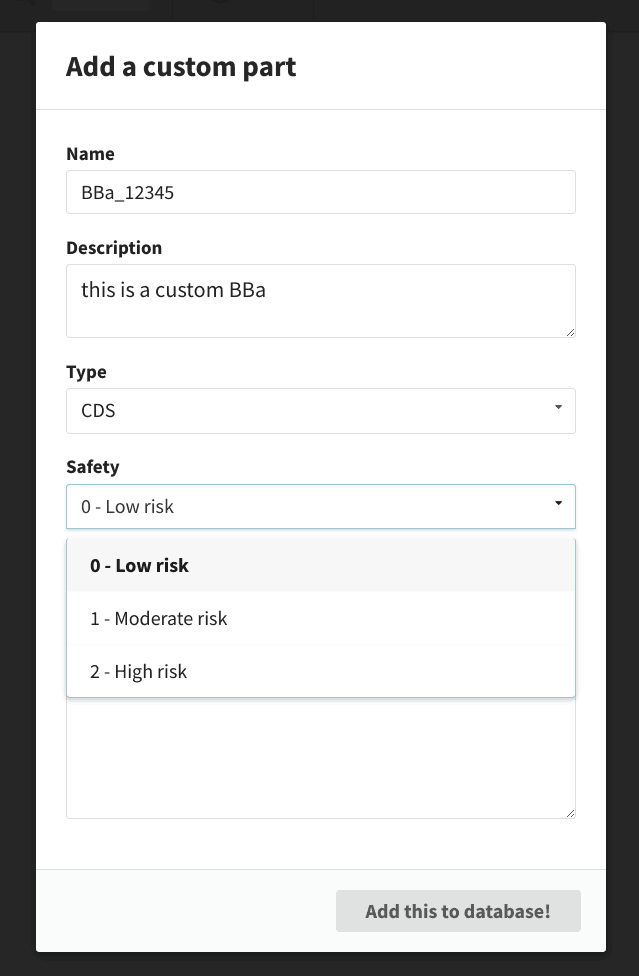
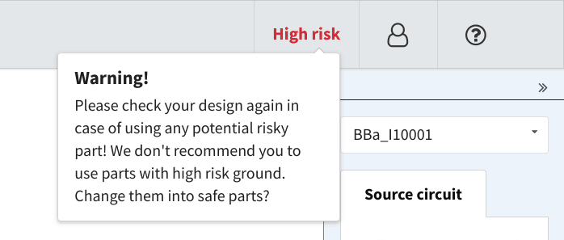
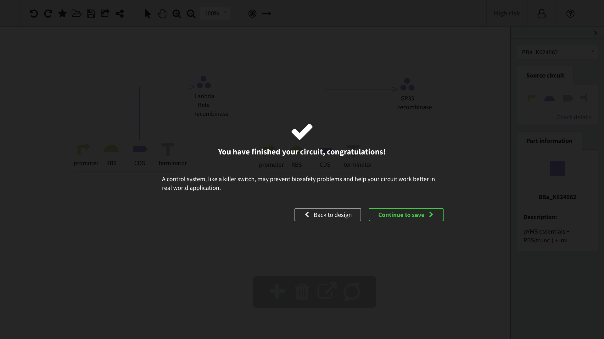
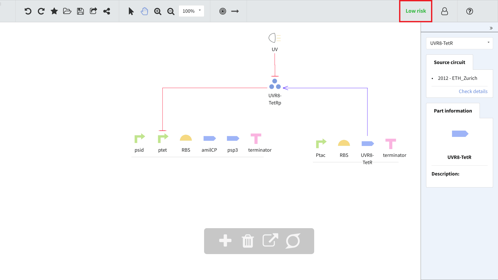
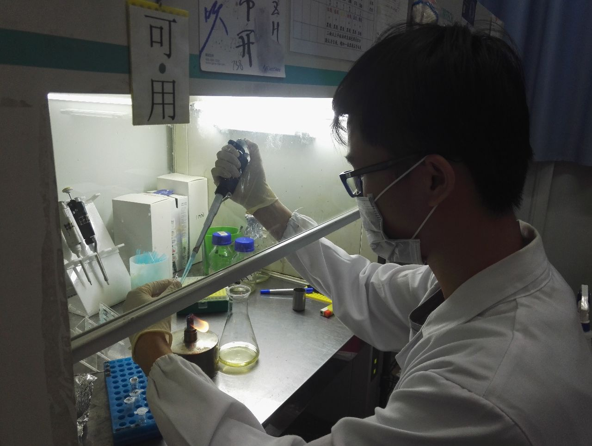
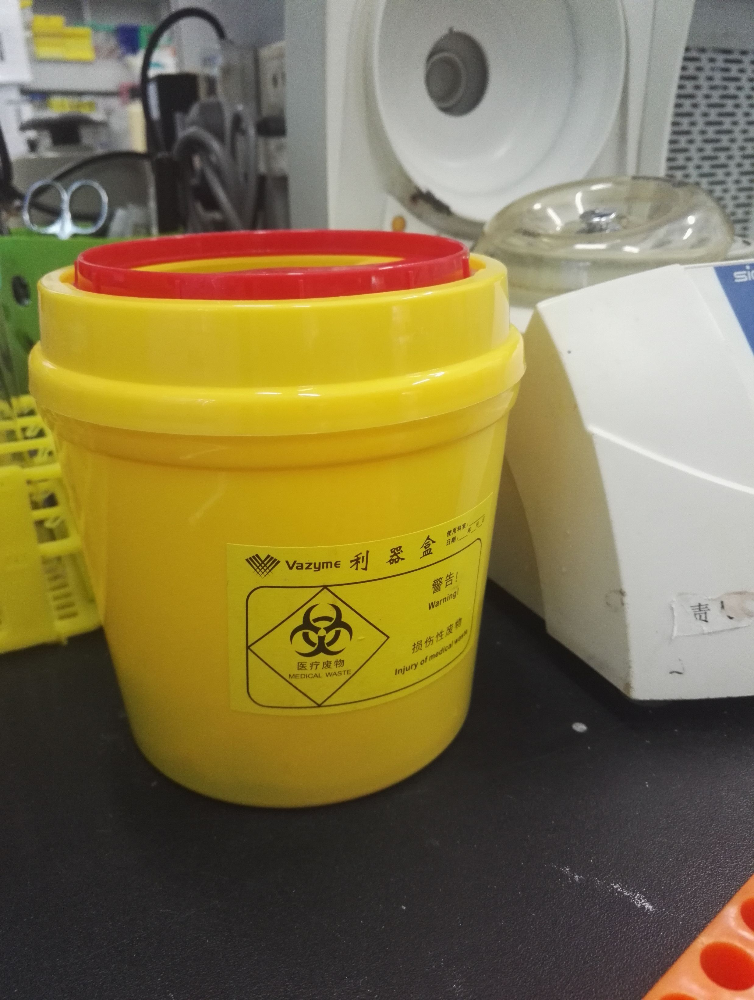

Q1: What about the biosafety level of Parts recommended by S-Din?
A: There are two major parts in iGEM, First is to choose a safe enough Chassis to redesign the circuits. Second, we need a safe enough Parts as material to make a Gene blueprint that benefits human beings. Therefore, this year, iGEM safety community announced 2017 White List. （http://2017.igem.org/Safety/White_List）
Q1.1: The sources of Parts and its Safty Level in the database of S-Din?
A: The source information is stored in our database including the original chassis and the adapted chassis. The database has been screened manually at the mid-late stage of development (Check Human Practice/ Project Assessment). Here are the results.

Figure 1: Risk group distribution of parts from S-Din's database.
Figure 1 shows the Chassis information and corresponding risk group in S-Din Database. It’s clear that all Parts with source information of Chassis belong to Risk Group 1& 2 which are granted to use in iGEM project. While the prohibited Risk Group 3& 4 won’t be displayed in S-Din. (iGEM Safety 2017 Risk Group http://2017.igem.org/Safety/Risk_Groups)
Unfortunately, there are still many Parts without Chassis information due to the incompletion of Registry which will likely cause potential biosafety danger when our users designing new circuits. But we’re also lucky to find DSMZ Database to track down the original chassis of every part, none of them are tagged with Dangerous.
Wrap up: Every Part whose source information is known come from Risk Group 1&2 that are relatively safe.
Q1.2: Are those Parts stored in the database of S-Din safe enough?
A: iGEM safety community has already accessed a series of Parts with Biosafety danger, and the ‘Red Flag’ tag was set in Registry.
There are numerous Parts in S-Din database. By manually screening all Parts in database, we found that there were only few that are tagged with ‘Red Flag’ (Fig. 2). Since we are dedicated to providing an open platform for synthetic biology, the user won’t be limited if they search for ‘Red Flag’ parts; However, users will be warned and advised not to do so once they attempt to design new circuits with ‘Red Flag’ parts.
Figure 2: Red Flag part distribution in S-Din's database.
Wrap up: Most of the Parts in S-Din are biosafety (without official ‘Red Flag’ tag), users are limited in using ‘Red Flag’ in our design platform.
Q2: By using design platform of S-Din, will there be any potential dangerous operation?
A: Even a proficient and professional Synthetic Biologist can’t avoid a dangerous operation. (For example, he pick out the right part out of thousands of Parts, but he become too excited so somehow ignore the dangerous side-product, who knows?) To avoid coincident accidence, we provide a General Biosafety Assessment Criterion and embed real-time Safe surveillance system to detect the safe problem in real time, the user will also be alerted.
Q2.1: Details of Biosafety Assessment of Parts in S-Din?
A: Every part is recorded with ‘Risk Group’ and three safety level are set (1 star: low risk, 2 stars: moderate risk, 3 stars: high risk) which is judged by two criteria:
When the user starts deeigning circuits, they are allowed to add undefined new parts to S-Din database. Users are requested to fill in information Risk Group, meanwhile tagging the Chassis of parts.
Figure 3: Users are requested to fill in information Risk Group of the part.
Q2.2: How S-Din make real-time safe surveillance in design platform happen?
A: This safe surveillance system also divided into three safe level: low risk(1), moderate risk(2), high risk(3). These are displayed in the up-right of the interface, and highlight with Green, Yellow, and Red. Simple assessment rule is used: the highest safety level among Parts on the canvas will be set as the general safety level. Once user adds or removes Parts, the safety level will change in real time. Simple but effective.
If high-risk Parts are added, the safety level of surveillance system will be set as High risk(3), Warning will be given as the design might contain potential risk.
Figure 4: Warning will be given if a part of High Risk (3) is added to the design.
Q2.3: Will there be ‘conversation’ between S-Din and user for potential Biosafety risk?
A: Yes! In the CORE (2015 SYSU-Software), an attempt was made that a safety tip was added after the end of design. This improvement is suggested by Prof. Yang Jianhua. We decided to inherit this idea so that we designed a more comprehensive User interaction.
The user will be informed of a basic Biosafety statement at their first Log In. Terms of Use will be given in the link. Special thanks to Prof. He Zhumei on this improvement.
For more detail, see our statements page
Once 3-stars high-risk Part is added in the design circuits, S-Din will suggest user remove the Part besides the Warning from the surveillance system. (as Figure 4)
Meanwhile, the safety tip in CORE is inherited to S-Din to become the last protection to guide the user to design ‘safe genetic circuits’.
Generally, we did anything we could to keep users from Biosafety problems. But the users still need to responsible for their own design.
Q1: How the genetic circuits were designed before the experiments and what about its safety level?
A: The circuits are designed with the help of S-Din, all parts used in the experiments are 100% safe. The surveillance system shows that the safety level of our circuits is low risk.
In the Interlab study, Standard safety protocol was conducted through the whole experiment.
Figure 6: The surveillance system shows that the safety level of our circuit is low risk. (Upper right corner)
Q2: How to choose safe material and build safe lab before experiments?
A: According to the assessment result generated by S-Din, the vector we used belongs to Risk Group 1 which can be used in Level-1 lab. The validation experiments will be limited in Laboratory used.
All experiments are conducted in Lu Lab in School of Life Science, Sun Yat-Sen University. The regulation of Laboratory safety and productivity management by Sun Yat-Sen University and Laboratory Safety Guidebook by Sun Yat-Sen University are conducted throughout the experiments.
In the preparation phase of our experiments, we consulted with Prof. He Zhumei about Biosafety. Research fellow Shen Dong help us with the Biosafety issues in our experimental protocol. Conversation with SYSU-CHINA about the safe operation in experiments benefits us a lot.
Q3: What safety problems were considered during our experiments?
A: Necessary safety protocol was conducted: All iGEMers were required to dress in experimental cloths, along with gloves, pants, masks etc.
Figure 7: Our member Wang Ziwei is conducting the experiment.
Q4: How we deal with deposited reagents and experiment instruments?
A: The safety operation protocol was conducted restrict.Used instruments, no matter one-use only or multi-use will be sterilized before deposit.All gel was recycled properly.Waste sorting is conducting in Lu Lab.
Figure 8: The medical waste box in Lu's lab.
135# Xin'gang Rd(W.)
Sun Yat-sen University, Guangzhou, China